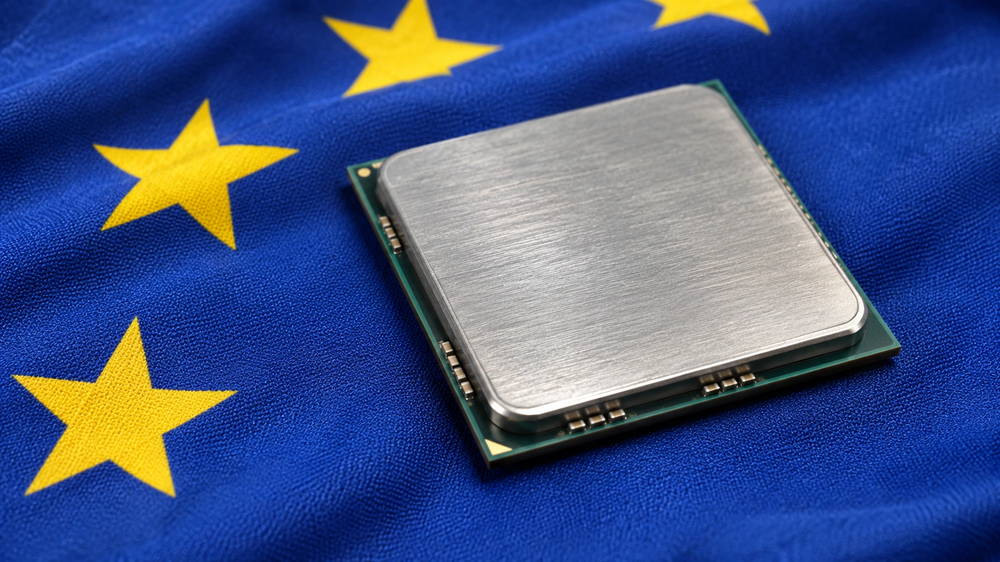

Europe Launches €525 Million Chip-Design Push to Help Startups Reach Production
The package combines €440 million in grants with €85 million for design infrastructure. Access to software and manufacturing could matter as much as cash for young chip companies.

Europe launched a chip-design platform on November 4 as part of a €525 million support package intended to help young semiconductor companies develop commercial products. The European Commission and member states will provide €440 million in grants, with another €85 million supporting the platform, according to the Commission’s announcement and Reuters reporting. The initiative targets the expensive steps between a chip idea and a product customers can use.
The European Chips Design Platform, known as EuroCDP, brings together access to design software, technical support, reusable circuit components and manufacturing resources. The Commission says European companies account for less than 1% of global revenue from fabless chip design. That figure refers to companies designing chips without operating their own fabrication plants, rather than Europe’s share of the entire semiconductor market.
The financial rationale is that access costs can stop a startup well before it has a chip to sell. Supporting a fabrication plant does not automatically create customers for its capacity. Building a larger base of designers could increase the pipeline of products requiring manufacturing, packaging and testing, although that outcome depends on the companies producing designs with genuine commercial demand.
Software access is a material part of the package
Synopsys announced an agreement with the European Chips Joint Undertaking on the same day to make its electronic design automation software available through EuroCDP. The company said its support covers the program’s Level 1 and Level 2 stages, from early ventures through pre-production. The agreement is one concrete example of how the platform intends to reduce the resources a young company must assemble independently.
Synopsys said the offering includes digital design and implementation flows, verification and signoff tools, as well as capabilities for photonic and analog or mixed-signal designs. These categories matter because developing a chip involves more than drawing a circuit. A design must be checked, translated into a manufacturable layout and assessed against electrical and physical constraints before a costly production attempt.
The supplier’s announcement is evidence of its participation, not an independent measurement of lower development costs or faster time to market. It also does not establish that all startups will receive identical access or support. The commercial benefit will depend on the specific tools available, the terms of participation and whether a company can use them effectively within its chosen manufacturing process.
Grants and shared resources address different costs
A grant can help cover work that a startup would otherwise have to finance from investor capital. Shared tools and design services can address a different barrier: obtaining access to capabilities that are expensive to license or difficult to negotiate before the company has a proven product. Combining the two can make development more feasible without removing the technical uncertainty.
The Commission’s platform factpage also identifies training and access to manufacturing capacity as services. These are complementary rather than interchangeable inputs. A software license does not replace specialist engineering knowledge, and a completed digital design still requires a route to physical prototypes. Failure at one stage can delay work financed at another.
For venture investors, that makes the program relevant to the amount of private capital needed before a company can demonstrate functioning silicon. Public support could extend the work financed by a funding round, but the announcement does not quantify that effect for any recipient. It would be premature to translate the package’s total value directly into a forecast of startup valuations or investor returns.
Design strength does not replace manufacturing execution
Our analysis of AI-chip bottlenecks explains why the semiconductor supply chain contains several distinct constraints. Better design access can address one part of the process while leaving foundry availability, packaging, memory and equipment requirements unresolved. A program that helps designers is therefore different from a promise of immediate additional chip output.
The distinction is particularly important for AI hardware. A design must serve a useful workload at a competitive cost, and its performance cannot be established from funding raised or software licensed. Testing prototypes and finding customers are commercial milestones separate from joining a support platform. The same applies to chips intended for industrial, automotive or connectivity applications.
The Commission links the initiative to its wider Chips Act agenda. Wednesday’s launch is a specific intervention in the design ecosystem, not evidence that the broader industrial strategy has already achieved its market-share ambitions. It should also be distinguished from the individual procurement, production and export developments covered in our report on South Korea’s AI-related chip exports.
The useful measures come after the launch
The €525 million headline describes the package of support being mobilized. It is not a tally of revenue generated by supported companies, nor does it show that the entire amount has already been paid to recipients. Grant awards, access to shared infrastructure, prototype deliveries and eventual commercial sales are different stages of implementation.
Progress will be easier to assess when the program identifies participating companies, the assistance actually delivered and the designs that move into successful production. A useful platform can reduce the cost of attempting to build a chip. Its longer-term economic contribution depends on whether those attempts create products customers buy, sustain specialist teams and generate repeat demand for Europe’s semiconductor capabilities.